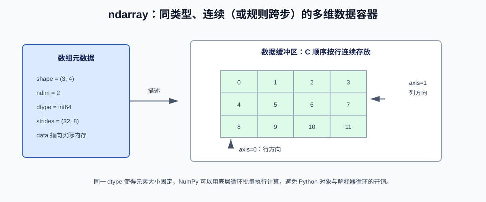
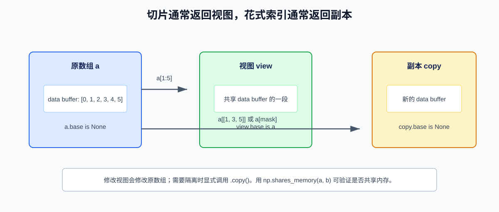
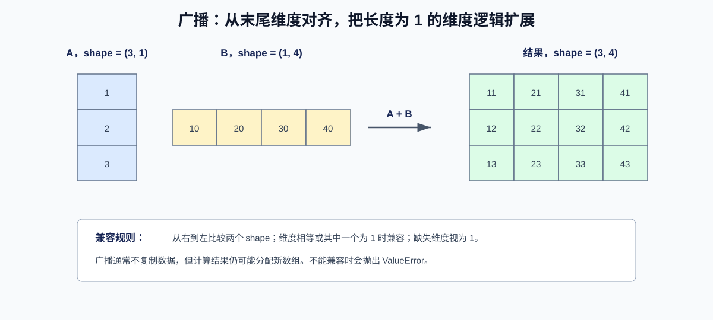

NumPy 使用指南：从 ndarray 到数值计算实践
NumPy（Numerical Python）是 Python 科学计算的基础库。它以多维同类型数组
ndarray为核心，提供向量化运算、广播、随机数、线性代数和文件读写能力。pandas、SciPy、scikit-learn、PyTorch 等工具都在不同程度上与它互操作。
一、NumPy 解决什么问题
Python 的 list 灵活，但每个元素都是独立 Python 对象；对大量数值逐个执行 Python 循环时，解释器调度和对象操作会成为瓶颈。NumPy 数组将同类型元素存放在连续或按固定跨步访问的内存中，并将循环下沉到经过优化的底层实现。
import numpy as np
values = np.array([1.0, 2.0, 3.0])
result = values * 2 + 1
print(result) # [3. 5. 7.]
这不是“让 Python 循环自动消失”的魔法：NumPy 的优势主要来自规则、批量、数值密集型计算。若逻辑包含复杂分支、字符串处理或频繁创建小数组，纯 Python、pandas、Numba 或专用库可能更合适。
二、安装与基本约定
2.1 安装
建议在虚拟环境中固定依赖版本：
python -m venv .venv
# Windows PowerShell
.venv\Scripts\Activate.ps1
python -m pip install "numpy==2.3.2"
import numpy as np
print(np.__version__)
社区惯例是 import numpy as np。不要使用 from numpy import *，它会污染命名空间并使来源不清晰。
2.2 ndarray 的核心属性

matrix = np.array([[1, 2, 3], [4, 5, 6]], dtype=np.int64)
print(matrix)
# [[1 2 3]
# [4 5 6]]
print(matrix.ndim) # 2：维度数量
print(matrix.shape) # (2, 3)：每个轴的长度
print(matrix.size) # 6：元素总数
print(matrix.dtype) # int64：元素数据类型
print(matrix.itemsize) # 8：每个元素字节数
print(matrix.nbytes) # 48：数据区字节数，等于 size * itemsize
| 属性 | 含义 | 示例 |
|---|---|---|
ndim |
轴（维度）的数量 | 矩阵为 2 |
shape |
每个轴上的长度 | (2, 3) 表示 2 行 3 列 |
size |
元素总数 | 2 * 3 = 6 |
dtype |
元素的二进制类型 | float64、int32、bool |
itemsize |
单个元素占用字节数 | float64 为 8 |
nbytes |
数组数据区占用字节数 | 不含 Python 对象开销 |
T |
转置视图（二维及以上） | (2, 3) 变为 (3, 2) |
2.3 轴 axis 应如何理解
对形状为 (2, 3) 的二维数组：
[[1, 2, 3], <- axis=0 方向：沿行向下聚合，得到每一列的结果
[4, 5, 6]]
axis=1 方向：沿列向右聚合，得到每一行的结果
scores = np.array([[80, 90, 70], [60, 75, 85]])
print(scores.sum(axis=0)) # [140 165 155]，每一列求和
print(scores.sum(axis=1)) # [240 220]，每一行求和
一个实用心智模型：axis 指定“要消失的轴”。sum(axis=0) 让第 0 个轴消失，因此保留列；sum(axis=1) 让第 1 个轴消失，因此保留行。
三、创建数组
3.1 从 Python 对象创建
import numpy as np
one_dimensional = np.array([1, 2, 3])
two_dimensional = np.array([[1, 2], [3, 4]])
# 显式数据类型，避免依赖推断
prices = np.array([19.9, 25.5, 30.0], dtype=np.float64)
嵌套序列的每层长度应相同。若传入长短不一的列表，现代 NumPy 通常会报错；不要用 dtype=object 勉强包装不规则数据，因为它会失去大部分数值计算优势。
3.2 常用初始化函数
zeros = np.zeros((2, 3), dtype=np.float32)
ones = np.ones((2, 3), dtype=np.int32)
filled = np.full((2, 3), fill_value=7)
identity = np.eye(3, dtype=np.float64)
empty = np.empty((2, 3)) # 未初始化，内容不可预测，填满前不要读取
numbers = np.arange(0, 10, 2) # [0 2 4 6 8]
points = np.linspace(0, 1, num=5) # [0. 0.25 0.5 0.75 1. ]
| 函数 | 适合场景 | 注意事项 |
|---|---|---|
np.zeros / np.ones |
初始化累计器、掩码 | 指定 dtype |
np.full |
用固定哨兵值填充 | 如 np.nan、-1 |
np.empty |
后续必然完整覆盖 | 不会清零，速度快但易误用 |
np.arange |
整数步长序列 | 浮点步长可能积累误差 |
np.linspace |
均匀采样闭区间 | 明确指定样本数，更适合浮点 |
np.eye |
单位矩阵 | 可用 k 指定对角线偏移 |
3.3 数据类型与转换
数值类型决定精度、取值范围和内存占用：
raw = np.array([1, 2, 3], dtype=np.int64)
as_float32 = raw.astype(np.float32)
print(as_float32.dtype) # float32
print(np.iinfo(np.int32).min, np.iinfo(np.int32).max)
print(np.finfo(np.float32).eps)
| 类型 | 典型用途 | 说明 |
|---|---|---|
np.int32 / np.int64 |
整数索引、计数 | 注意溢出 |
np.float32 |
深度学习、图像、节省内存 | 约 7 位十进制有效数字 |
np.float64 |
科学计算默认精度 | 约 16 位十进制有效数字 |
np.bool_ |
条件掩码 | 每个元素只表示真假 |
np.complex128 |
频域、信号处理 | 复数实部与虚部 |
astype() 默认创建新数组。若确实无需转换，可使用 astype(dtype, copy=False)，但不要把“是否复用内存”的细节作为业务逻辑依据。
四、索引、切片与形状变换
4.1 基础索引和切片
data = np.arange(12).reshape(3, 4)
# [[ 0, 1, 2, 3],
# [ 4, 5, 6, 7],
# [ 8, 9, 10, 11]]
print(data[1, 2]) # 6：推荐使用逗号分隔的多维索引
print(data[1]) # [4 5 6 7]：第 1 行
print(data[:, 1]) # [1 5 9]：第 1 列
print(data[0:2, 1:3]) # [[1 2] [5 6]]
print(data[::-1]) # 行倒序
与列表类似，切片末尾不包含在结果中。不同的是，多维切片可以在每个轴上独立指定范围。
4.2 布尔索引和花式索引
temperatures = np.array([18.5, 21.0, 26.3, 19.8, 30.1])
hot_mask = temperatures >= 25
print(hot_mask) # [False False True False True]
print(temperatures[hot_mask]) # [26.3 30.1]
values = np.array([10, 20, 30, 40])
print(values[[3, 0, 0]]) # [40 10 10]
布尔索引尤其适合筛选和原地赋值：
temperatures[temperatures < 20] = 20
4.3 视图与副本：最重要的内存语义

基础切片通常返回视图，与原数组共享数据；布尔索引和整数数组索引通常产生副本。这是性能优势，也是修改数据时的常见错误来源。
source = np.arange(6)
view = source[1:4]
view[0] = 99
print(source) # [ 0 99 2 3 4 5]，原数组被修改
selected = source[[1, 3, 5]]
selected[0] = -1
print(source) # 原数组不会因 selected 的修改而变化
isolated = source[1:4].copy()
isolated[:] = 0
print(np.shares_memory(source, view)) # True
print(np.shares_memory(source, selected)) # False
链式索引容易隐藏副本问题，应避免：
# 不推荐：第一步可能生成临时副本，赋值未必写回原数组
data[data < 0][0] = 0
# 推荐：一次构造掩码后直接赋值
data[data < 0] = 0
4.4 reshape、展平和维度扩展
flat = np.arange(12)
matrix = flat.reshape(3, 4)
auto_shape = flat.reshape(3, -1) # -1 让 NumPy 推导该维长度
flattened_copy = matrix.flatten() # 总是副本
flattened_view = matrix.ravel() # 可行时返回视图
row = np.array([10, 20, 30])
print(row.shape) # (3,)
print(row[:, np.newaxis].shape) # (3, 1)
print(row[None, :].shape) # (1, 3)
reshape() 在内存布局兼容时返回视图，否则可能产生副本。若数组必须连续存储后再传给底层库，可使用 np.ascontiguousarray(array)。
五、向量化、通用函数与广播
5.1 向量化表达式
NumPy 的算术、比较和多数数学函数会逐元素工作：
x = np.array([1.0, 4.0, 9.0])
print(x + 2) # [ 3. 6. 11.]
print(x * x) # [ 1. 16. 81.]
print(np.sqrt(x)) # [1. 2. 3.]
print(np.sin(x)) # 逐元素正弦
print(x > 3) # [False True True]
这类函数称为 ufunc（universal function，通用函数）。它们支持广播、out= 输出参数以及 where= 条件计算：
numerator = np.array([10.0, 20.0, 30.0])
denominator = np.array([2.0, 0.0, 5.0])
result = np.zeros_like(numerator)
np.divide(numerator, denominator, out=result, where=denominator != 0)
print(result) # [5. 0. 6.]
使用 where= 能避免无效除法和告警；使用 out= 可在高频路径减少临时数组分配。
5.2 广播规则

广播会从最后一个维度开始比较两个形状。每个维度满足以下任一条件即可兼容：
- 两个维度长度相等；
- 其中一个维度长度为
1； - 一方缺少该维度，按长度
1对待。
matrix = np.array([[1], [2], [3]]) # shape: (3, 1)
offset = np.array([[10, 20, 30, 40]]) # shape: (1, 4)
print(matrix + offset)
# [[11 21 31 41]
# [12 22 32 42]
# [13 23 33 43]]
标准化每一列时，可保留被聚合的维度：
features = np.array([[1.0, 10.0], [2.0, 20.0], [3.0, 30.0]])
mean = features.mean(axis=0, keepdims=True)
std = features.std(axis=0, keepdims=True)
standardized = (features - mean) / np.maximum(std, 1e-12)
keepdims=True 让均值形状保留为 (1, 2)，因此可以与 (3, 2) 的原数据稳定广播，避免维度变化导致的错误。
5.3 聚合与条件选择
sales = np.array([[120, 80, 100], [90, 110, 130]])
print(sales.sum())
print(sales.mean(axis=0))
print(sales.max(axis=1))
print(sales.argmax(axis=1))
labels = np.where(sales >= 100, "达标", "未达标")
clipped = np.clip(sales, 90, 120)
处理缺失值时使用 np.nan 与 nan* 系列函数：
measurements = np.array([1.0, np.nan, 3.0])
print(np.mean(measurements)) # nan
print(np.nanmean(measurements)) # 2.0
np.nanmean 适合明确以 NaN 表示缺失的浮点数据；业务上仍应确认“缺失”和“无穷大”“非法值”是否需要不同规则。
六、排序、去重与集合操作
values = np.array([3, 1, 2, 1])
print(np.sort(values)) # [1 1 2 3]，返回新数组
print(np.argsort(values)) # [1 3 2 0]，排序后的原始下标
print(np.unique(values)) # [1 2 3]
unique, counts = np.unique(values, return_counts=True)
print(unique, counts) # [1 2 3] [2 1 1]
常见集合操作：
a = np.array([1, 2, 3, 3])
b = np.array([3, 4, 5])
print(np.intersect1d(a, b)) # [3]
print(np.union1d(a, b)) # [1 2 3 4 5]
print(np.setdiff1d(a, b)) # [1 2]
这些函数通常会排序和去重；若需保留原始顺序或处理二维行，应明确设计处理逻辑。
七、线性代数与矩阵乘法
7.1 * 与 @ 的区别
a = np.array([[1, 2], [3, 4]])
b = np.array([[5, 6], [7, 8]])
print(a * b)
# [[ 5 12]
# [21 32]] # 逐元素相乘
print(a @ b)
# [[19 22]
# [43 50]] # 矩阵乘法
7.2 常用 numpy.linalg 操作
import numpy as np
coefficient = np.array([[2.0, 1.0], [1.0, 3.0]])
constant = np.array([8.0, 13.0])
solution = np.linalg.solve(coefficient, constant)
print(solution) # [2.2 3.6]
inverse = np.linalg.inv(coefficient)
determinant = np.linalg.det(coefficient)
norm = np.linalg.norm(constant)
解方程组时优先使用 np.linalg.solve(A, b)，不要先计算逆矩阵再做 inv(A) @ b：后者通常更慢且数值稳定性更差。
最小二乘问题使用：
x, residuals, rank, singular_values = np.linalg.lstsq(
coefficient,
constant,
rcond=None,
)
八、随机数：使用 Generator 而不是全局状态
推荐创建独立随机数生成器，便于可复现和测试隔离：
import numpy as np
rng = np.random.default_rng(seed=42)
uniform = rng.random((2, 3))
integers = rng.integers(low=0, high=10, size=5)
normal = rng.normal(loc=0.0, scale=1.0, size=1000)
sample = rng.choice(np.arange(10), size=3, replace=False)
| 方法 | 分布或行为 |
|---|---|
rng.random(size) |
[0, 1) 均匀分布 |
rng.integers(low, high, size) |
整数均匀分布，high 不包含 |
rng.normal(loc, scale, size) |
正态分布 |
rng.choice(a, size, replace) |
抽样 |
rng.permutation(x) |
随机排列，返回新对象 |
rng.shuffle(x) |
原地打乱 |
不要在每个函数内部都固定 seed，否则每次调用会得到相同结果。更好的方式是在程序入口创建 Generator，再将它作为依赖传入需要随机性的函数。
九、文件读写和内存映射
9.1 NumPy 原生格式
array = np.arange(12).reshape(3, 4)
np.save("matrix.npy", array)
loaded = np.load("matrix.npy")
np.savez_compressed("dataset.npz", features=array, labels=np.array([0, 1, 1]))
with np.load("dataset.npz") as archive:
features = archive["features"]
labels = archive["labels"]
.npy 保留数组的形状和类型，适合 NumPy 内部交换；.npz 是多个 .npy 文件组成的归档。加载不可信 .npy/.npz 时保持默认 allow_pickle=False，不要启用 pickle 反序列化。
9.2 文本数据与大文件
data = np.array([[1.2, 3.4], [5.6, 7.8]])
np.savetxt("data.csv", data, delimiter=",", fmt="%.3f")
loaded = np.loadtxt("data.csv", delimiter=",")
CSV 有复杂字段、表头、缺失值、日期或混合类型时，优先考虑 pandas。仅有规则数值列时，np.loadtxt 或 np.genfromtxt 更直接。
对大于内存的数据，可使用内存映射按需访问：
shape = (10_000, 1_000)
memmap = np.memmap(
"large.dat",
dtype=np.float32,
mode="w+",
shape=shape,
)
memmap[0] = 1.0
memmap.flush()
del memmap
memmap 不会让任意算法“无需内存”；它只是把数组页映射到磁盘。应按块处理，并注意磁盘 I/O 和并发写入的协调。
十、贯穿案例：清洗传感器读数并统计
设有 4 个设备连续 6 次读数，-999 表示设备未上报：
import numpy as np
readings = np.array(
[
[20.1, 20.5, -999.0, 21.0, 20.8, 20.6],
[18.2, 18.4, 18.7, 50.0, 18.5, 18.3],
[25.0, 25.1, 25.2, 25.1, 25.3, -999.0],
[19.0, 19.2, 19.1, 19.3, 19.2, 19.1],
],
dtype=np.float64,
)
# 1. 将业务哨兵值转换为 NaN，保留原数组供审计
clean = readings.copy()
clean[clean == -999.0] = np.nan
# 2. 每台设备均值与标准差，axis=1 表示沿时间轴聚合
device_mean = np.nanmean(clean, axis=1, keepdims=True)
device_std = np.nanstd(clean, axis=1, keepdims=True)
# 3. 标记离均值超过 3 个标准差的异常值
z_score = np.abs(clean - device_mean) / np.maximum(device_std, 1e-12)
outlier_mask = z_score > 3
# 4. 把异常值设为 NaN 后重新统计
filtered = clean.copy()
filtered[outlier_mask] = np.nan
final_mean = np.nanmean(filtered, axis=1)
print(final_mean)
该案例体现了几个工程要点：
- 不原地污染原始读数，保留数据血缘。
- 使用
keepdims=True稳定形状，利用广播计算每行 Z-Score。 - 对分母使用极小值下限，避免标准差为零时除零。
- 缺失值和异常值规则应由领域定义；这里的阈值只作演示。
十一、性能与内存实践
11.1 优先向量化，但避免无节制临时数组
# 简洁，通常足够好
result = np.sqrt(a * a + b * b)
# 在超大数组和热点路径中，可复用输出缓冲区以减少分配
result = np.empty_like(a, dtype=np.result_type(a, b, np.float64))
b_squared = np.empty_like(result)
np.multiply(a, a, out=result)
np.multiply(b, b, out=b_squared)
np.add(result, b_squared, out=result)
np.sqrt(result, out=result)
可读性优先。只有在性能剖析确认临时数组造成压力时，再使用 out= 或拆分表达式优化。
11.2 预分配，避免循环中反复追加
# 不推荐：每次 np.append 都会创建新数组
result = np.array([], dtype=np.float64)
for value in range(1_000):
result = np.append(result, value)
# 推荐：已知长度时预分配
result = np.empty(1_000, dtype=np.float64)
for index in range(1_000):
result[index] = index
# 长度未知时先收集到 list，再一次性转换
result = np.array([value for value in range(1_000)], dtype=np.float64)
11.3 性能测量
Jupyter 中使用 %timeit；常规 Python 脚本使用 timeit：
import timeit
import numpy as np
setup = "import numpy as np; a = np.arange(1_000_000, dtype=np.float64)"
elapsed = timeit.timeit("np.sqrt(a).sum()", setup=setup, number=100)
print(elapsed)
测量时固定输入规模、预热一次、比较等价算法，并避免把数组创建时间混入计算时间。
十二、常见陷阱
| 问题 | 原因 | 建议 |
|---|---|---|
a * b 结果不对 |
* 是逐元素乘法 |
矩阵乘法用 a @ b |
axis 写反 |
不清楚被消失的轴 | 先写出 shape 和期望输出形状 |
| 修改切片影响原数据 | 切片通常是视图 | 需隔离时显式 .copy() |
| 浮点相等判断失败 | 二进制浮点无法精确表示多数小数 | 用 np.isclose / np.allclose |
| 整数运算溢出 | dtype 范围不足 |
预先选择足够宽的 dtype |
| 广播报错 | 对齐后维度既不相等也不为 1 | 检查 shape，使用 None 扩维 |
np.append 很慢 |
每次都分配复制新数组 | 预分配或先使用 list |
误用 np.matrix |
语义特殊且不推荐 | 始终使用 ndarray |
| 随机结果不可复现 | 使用隐式全局随机状态 | 显式使用 default_rng(seed) |
浮点比较示例：
actual = np.array([0.1 + 0.2])
expected = np.array([0.3])
print(actual == expected) # [False]
print(np.allclose(actual, expected)) # True
十三、附录：文中所用 NumPy 函数详解
本附录对全文示例中出现的每个 NumPy 函数和方法按功能分类逐一说明，包含函数签名、核心参数、返回值、示例及注意事项。
13.1 数组创建
np.array(object, dtype=None, ...)
作用：将 Python 列表、元组等序列对象转换为 ndarray，是最基础的数组构造方式。
核心参数：
- object：类数组对象，如 list、tuple，或嵌套序列
- dtype：显式指定元素类型，如 np.float64、np.int32；省略时由 NumPy 自动推断
返回：ndarray，默认情况下是新分配内存的数组（不是视图）。
a = np.array([1, 2, 3]) # 推断为 int64
b = np.array([1, 2, 3], dtype=np.float32) # 显式指定为 float32
c = np.array([[1, 2], [3, 4]]) # 二维数组 (2, 2)
注意：传入不规则嵌套列表（如 [[1, 2], [3]]）可能导致 dtype=object 或报错；应保证每层长度一致。
np.zeros(shape, dtype=float, ...) / np.ones(shape, dtype=float, ...)
作用：创建指定形状、所有元素均为 0 或 1 的数组，常用于初始化累计器、掩码、权重矩阵。
核心参数：
- shape：整数或整数元组，如 3 或 (2, 3)
- dtype：默认 float64
返回：全 0/全 1 的新数组。
np.zeros(5) # [0. 0. 0. 0. 0.] shape=(5,)
np.zeros((2, 3), dtype=np.int32) # [[0 0 0] [0 0 0]] shape=(2,3)
np.ones((3, 3)) # 3×3 全1矩阵（float64）
np.full(shape, fill_value, dtype=None, ...)
作用：创建指定形状、所有元素填充为同一个指定值的数组。
核心参数：
- shape：数组形状
- fill_value：填充值，如 7、np.nan、-1
- dtype：不指定时由 fill_value 推断
np.full((2, 3), 7) # [[7 7 7] [7 7 7]]
np.full(4, np.nan) # [nan nan nan nan] 常用于初始化缺失值容器
np.empty(shape, dtype=float, ...)
作用：分配指定形状的内存空间但不初始化，元素值是内存中残留的随机数据。在后续代码会完全覆盖所有元素的场景下使用，比 np.zeros 更快。
核心参数：同 np.zeros。
⚠️ 注意：读取未写入位置的结果是不可预测的。只有在确定每个位置都会被赋值时才使用。
buf = np.empty(1000, dtype=np.float64) # 内容不可预测
buf[:] = 0 # 必须显式填充后才能安全读取
np.eye(N, M=None, k=0, dtype=float, ...)
作用：创建二维单位矩阵（对角线为 1，其余为 0），常用于线性代数中的恒等变换、掩码构造。
核心参数：
- N：行数
- M：列数，默认等于 N
- k：对角线偏移，0 为主对角线，1 为主对角线之上，-1 为其下
np.eye(3) # 3×3 单位矩阵
np.eye(3, k=1) # 主对角线上方偏移1的位置为1
np.arange([start,] stop, [step,] dtype=None)
作用：创建等间隔数值的一维数组，类似于 Python 内置的 range，但返回 ndarray。
核心参数：
- start：起始值，默认 0（包含）
- stop：结束值（不包含）
- step：步长，默认 1
np.arange(10) # [0 1 2 3 4 5 6 7 8 9]
np.arange(0, 10, 2) # [0 2 4 6 8]
np.arange(5, 0, -1) # [5 4 3 2 1]
⚠️ 注意：使用浮点数步长时可能因浮点精度导致终点问题，如 np.arange(0, 1, 0.1) 可能不包含 1.0 或多出一个元素；浮点均匀采样推荐使用 np.linspace。
np.linspace(start, stop, num=50, endpoint=True, ...)
作用：在指定闭区间内均匀生成指定数量的样本点。
核心参数：
- start：起始值
- stop：结束值（默认包含）
- num：样本点数，默认 50
- endpoint：True（默认）表示包含 stop，False 表示不包含
返回：包含 num 个等间距点的一维数组。
np.linspace(0, 1, num=5) # [0. 0.25 0.5 0.75 1. ]
np.linspace(0, 10, num=6) # [ 0. 2. 4. 6. 8. 10.]
13.2 数组属性
ndarray 核心属性
| 属性 | 含义 | 示例说明 |
|---|---|---|
.ndim |
维度（轴）的数量 | 矩阵为 2，向量为 1 |
.shape |
各轴长度组成的元组 | (2, 3) 表示 2 行 3 列 |
.size |
元素总数 | shape 各元素的乘积 |
.dtype |
元素数据类型 | float64、int32、bool_ 等 |
.itemsize |
单个元素占用字节数 | float64 为 8，int32 为 4 |
.nbytes |
数据区总字节数 | size × itemsize，不含对象开销 |
.T |
转置视图 | 二维 (m, n) 变为 (n, m) |
这些属性在调试和检查数组形状时极为常用。
13.3 类型与内存信息
ndarray.astype(dtype, copy=True, ...)
作用：将数组元素转换为指定类型，返回新数组（默认）。
核心参数：
- dtype：目标类型
- copy：True（默认）总是返回新数组；False 在类型相同时可能返回原数组
a = np.array([1, 2, 3], dtype=np.int64)
b = a.astype(np.float32) # b.dtype == float32
⚠️ 注意：大范围整数转小范围整数（如 int64 → int32）可能溢出；浮点转整数会截断小数部分而非四舍五入。
np.iinfo(dtype) / np.finfo(dtype)
作用：查询整数/浮点类型的数值限制信息（机器精度、取值范围等）。
核心参数：dtype 为整数类型或浮点类型。
返回：包含 .min、.max、.eps（浮点）等字段的信息对象。
np.iinfo(np.int32).max # 2147483647
np.finfo(np.float32).eps # 约 1.19e-7，即 float32 能表示的最小精度差
np.finfo(np.float64).tiny # 最小正正规数
典型用途：
- 做除零保护时，用 .eps 或 .tiny 作为下限
- 在类型转换前检查是否会溢出
np.shares_memory(a, b, ...)
作用：判断两个数组是否共享底层数据内存，用于确认视图/副本关系。
返回：布尔值。
a = np.arange(6)
b = a[1:4]
np.shares_memory(a, b) # True，切片是视图
c = a[[1, 3, 5]]
np.shares_memory(a, c) # False，花式索引产生副本
ndarray.copy(order='C')
作用：返回数组的深拷贝（数据完全独立，不与原数组共享内存），用于需要隔离修改时。
source = np.array([1, 2, 3])
isolated = source.copy()
isolated[0] = 99
print(source) # [1 2 3]，原数组不受影响
np.ascontiguousarray(a, dtype=None)
作用：将数组转换为 C 顺序（行优先）的连续内存数组。在调用 C 扩展、FFT 或某些 BLAS 函数前，如果数组可能是非连续的（如经过转置或切片），使用此函数可保证内存布局符合要求。
a = np.arange(12).reshape(3, 4).T # 转置后可能非连续
contig = np.ascontiguousarray(a) # 保证连续
13.4 形状变换
ndarray.reshape(*shape, order='C')
作用：在不改变数据的前提下重新解释数组的形状，返回新视图（内存布局兼容时）或副本。
核心参数：
- shape：新形状的整数元组；其中一个维度可以写为 -1，让 NumPy 自动推导该维长度
a = np.arange(12)
a.reshape(3, 4) # shape (3, 4)
a.reshape(3, -1) # 同 (3, 4)，-1 自动推导为 4
a.reshape(-1, 6) # 同 (2, 6)
⚠️ 注意：新形状的元素总数必须与原数组相等（size 不变）。
ndarray.flatten(order='C')
作用：将多维数组展平为一维数组，总是返回副本。
m = np.array([[1, 2], [3, 4]])
m.flatten() # [1 2 3 4]，与原数组不共享内存
ndarray.ravel(order='C')
作用：将多维数组展平为一维数组，尽可能返回视图（内存连续时返回视图）。
m = np.arange(6).reshape(2, 3)
v = m.ravel() # 通常是视图
v[0] = 99
print(m[0, 0]) # 99，原数组被修改
对比：flatten() 总是副本，安全但有拷贝开销；ravel() 在可行时为视图，无拷贝但修改可能影响原数组。
np.newaxis / None
作用：在指定位置增加一个长度为 1 的维度，常用于将一维向量转为行/列向量以满足广播要求。np.newaxis 是 None 的别名，二者等价。
v = np.array([10, 20, 30]) # shape (3,)
v[:, np.newaxis] # shape (3, 1) 列向量
v[np.newaxis, :] # shape (1, 3) 行向量，等价于 v[None, :]
13.5 数学与逐元素运算（ufunc）
NumPy 的逐元素运算函数统称为 ufunc（universal function），它们支持广播、out= 参数和 where= 掩码。
基本算术与数学函数
| 函数 | 作用 | 数学含义 |
|---|---|---|
np.sqrt(x) |
逐元素平方根 | √x |
np.sin(x) / np.cos(x) / np.tan(x) |
逐元素三角函数 | sin(x)、cos(x) 等 |
np.abs(x) |
逐元素绝对值 | |x| |
np.exp(x) |
逐元素自然指数 | eˣ |
np.log(x) |
逐元素自然对数 | ln(x) |
np.add(a, b) |
逐元素加法 | a + b |
np.multiply(a, b) |
逐元素乘法 | a * b |
np.divide(a, b) |
逐元素除法 | a / b |
np.maximum(a, b) |
逐元素取较大值 | max(a, b) |
这些函数都支持 out= 参数指定输出数组，避免临时分配：
result = np.empty_like(a)
np.sqrt(a, out=result) # 直接写入 result，不产生临时数组
np.divide 的 where 参数用法
num = np.array([10.0, 20.0, 30.0])
den = np.array([2.0, 0.0, 5.0])
out = np.zeros_like(num)
np.divide(num, den, out=out, where=den != 0)
# out: [5. 0. 6.]，第2个位置因 where=False 保持原值（0）
where 掩码为 False 的位置不执行计算，可避免除零警告和 NaN 污染。
np.zeros_like(a, dtype=None, ...) / np.empty_like(a, dtype=None, ...)
作用：创建与给定数组形状和类型相同的全 0 / 未初始化数组。
核心参数：
- a：参考数组
- dtype：可覆盖类型，默认与 a 相同
a = np.array([[1, 2], [3, 4]], dtype=np.float32)
np.zeros_like(a) # shape (2,2), dtype float32, 全0
np.empty_like(a) # shape (2,2), dtype float32, 未初始化
np.result_type(*arrays_and_dtypes)
作用：根据 NumPy 类型提升规则，推断多个数组/类型混合运算后的结果类型。
np.result_type(np.float32, np.int32, np.float64) # float64
常用于 empty_like 等预分配场景中确定输出类型。
13.6 聚合统计方法
聚合方法沿指定轴将多个值归约为一个值。它们都支持 axis 和 keepdims 参数。
ndarray.sum(axis=None, keepdims=False) / np.sum(a, ...)
作用：沿指定轴求和；不指定 axis 时对所有元素求和。
a = np.array([[1, 2], [3, 4]])
a.sum() # 10，所有元素之和
a.sum(axis=0) # [4 6]，按列求和（第0轴消失）
a.sum(axis=1) # [3 7]，按行求和（第1轴消失）
ndarray.mean(axis=None, keepdims=False) / np.mean(a, ...)
作用：沿指定轴计算算术平均值。
a = np.array([[10, 20], [30, 40]])
a.mean() # 25.0
a.mean(axis=0) # [20. 30.]
ndarray.max(axis=None, keepdims=False) / np.max(a, ...) / ndarray.min(...)
作用：沿指定轴求最大值/最小值。
a = np.array([[5, 2], [3, 8]])
a.max() # 8
a.max(axis=1) # [5 8]
ndarray.argmax(axis=None) / np.argmax(a, ...)
作用：沿指定轴返回最大值的索引位置（不是值本身）。
a = np.array([[5, 2, 7], [3, 8, 1]])
a.argmax(axis=1) # [2 1]，第0行最大值在索引2(=7)，第1行在索引1(=8)
典型用途：分类任务中取模型输出概率最大的类别。
ndarray.std(axis=None, keepdims=False, ddof=0) / np.std(a, ...)
作用：沿指定轴计算标准差。
核心参数：
- ddof：自由度校正，0 为总体标准差（默认），1 为样本标准差
a = np.array([1.0, 2.0, 3.0, 4.0, 5.0])
a.std() # 约 1.414（总体标准差）
a.std(ddof=1) # 约 1.581（样本标准差）
keepdims=True 的意义
聚合方法中设置 keepdims=True 后，被聚合的轴不会消失，而是保留长度为 1，使结果可以与原数组直接广播：
a = np.array([[1.0, 10.0], [2.0, 20.0], [3.0, 30.0]])
mean = a.mean(axis=0, keepdims=True) # shape (1, 2)，不是 (2,)
std = a.std(axis=0, keepdims=True) # shape (1, 2)
normalized = (a - mean) / std # 广播正常工作
np.nanmean(a, axis=None, ...) / np.nanstd(a, ...) / np.nansum(a, ...) 等
作用：与对应的 mean/std/sum 行为相同，但自动忽略 NaN 值，将 NaN 视为缺失而非污染数据。
a = np.array([1.0, np.nan, 3.0])
np.mean(a) # nan，任何涉及 NaN 的普通运算结果都是 NaN
np.nanmean(a) # 2.0，忽略 NaN 后对剩余元素求均值
系列函数：np.nansum、np.nanmax、np.nanmin、np.nanstd、np.nanvar、np.nanmedian、np.nanargmax、np.nanargmin、np.nanquantile。
13.7 条件与筛选
np.where(condition, [x, y])
作用：
- 三参数形式：逐元素判断 condition，为 True 取 x 中对应元素，为 False 取 y 中对应元素，类似于向量化的三元表达式。
- 单参数形式：np.where(condition) 返回满足条件的元素索引元组。
scores = np.array([80, 55, 92, 45, 70])
labels = np.where(scores >= 60, "及格", "不及格")
# ['及格' '不及格' '及格' '不及格' '及格']
indices = np.where(scores >= 60)
print(indices) # (array([0, 2, 4]),)，满足条件的位置索引
np.clip(a, a_min, a_max, ...)
作用：将数组元素限制在 [a_min, a_max] 范围内，小于 a_min 的设为 a_min，大于 a_max 的设为 a_max，常用于梯度裁剪、数值截断。
a = np.array([80, 200, -5, 150, 0])
np.clip(a, 0, 100) # [ 80 100 0 100 0]
np.clip(a, a_min=50, a_max=None) # [ 80 200 50 150 50]
np.isclose(a, b, rtol=1e-05, atol=1e-08) / np.allclose(a, b, ...)
作用：在浮点误差容限内判断两个（组）数是否相等。
核心参数：
- rtol：相对误差容限（默认 1e-5）
- atol：绝对误差容限（默认 1e-8）
- 判断公式：|a - b| ≤ atol + rtol × |b|
返回：
- np.isclose：逐元素返回布尔数组
- np.allclose：单个布尔值，所有元素均 close 时返回 True
a = np.array([0.1 + 0.2])
b = np.array([0.3])
a == b # False，浮点精度问题
np.isclose(a, b) # [ True]
np.allclose(a, b)# True
⚠️ 永远不要用 == 直接比较浮点数，始终使用 np.isclose 或 np.allclose。
13.8 排序与集合操作
np.sort(a, axis=-1, kind=None)
作用：返回数组排序后的副本（不修改原数组）。
核心参数：
- axis：沿哪个轴排序，默认 -1（最后一个轴）；axis=None 将展平后排序
- kind：排序算法，可选 'quicksort'（默认）、'mergesort'、'heapsort'、'stable'
a = np.array([3, 1, 2, 1])
np.sort(a) # [1 1 2 3]
print(a) # [3 1 2 1]，原数组不变
如需原地排序，使用 a.sort()。
np.argsort(a, axis=-1, kind=None)
作用：返回排序后元素在原数组中的索引位置（而不是排序后的值），常用于按某个特征对数据排序。
a = np.array([30, 10, 20, 50])
order = np.argsort(a)
print(order) # [1 2 0 3]，从小到大的原始下标
print(a[order]) # [10 20 30 50]，用索引数组得到排序结果
np.unique(ar, return_counts=False, return_index=False, ...)
作用：返回数组中的唯一值，默认排序。
核心参数：
- return_counts=True：同时返回每个唯一值出现的次数
- return_index=True：同时返回每个唯一值在原数组中首次出现的索引
a = np.array([3, 1, 2, 1])
np.unique(a) # [1 2 3]
vals, counts = np.unique(a, return_counts=True)
print(vals) # [1 2 3]
print(counts) # [2 1 1]
np.intersect1d(ar1, ar2) / np.union1d(ar1, ar2) / np.setdiff1d(ar1, ar2)
作用：对一维数组执行集合操作（均返回排序后的结果）：
- intersect1d：交集（同时存在于两个数组中的元素）
- union1d：并集（去重合并）
- setdiff1d：差集（在 ar1 中但不在 ar2 中）
a = np.array([1, 2, 3, 3])
b = np.array([3, 4, 5])
np.intersect1d(a, b) # [3]
np.union1d(a, b) # [1 2 3 4 5]
np.setdiff1d(a, b) # [1 2]
13.9 线性代数（np.linalg）
np.linalg.solve(A, b)
作用：求解线性方程组 Ax = b 的精确解 x，其中 A 必须是方阵且满秩。
核心参数：
- A：系数矩阵，形状 (n, n)
- b：常数项向量/矩阵，形状 (n,) 或 (n, k)
返回：解向量 x，形状与 b 一致。
A = np.array([[2.0, 1.0], [1.0, 3.0]])
b = np.array([8.0, 13.0])
x = np.linalg.solve(A, b) # [2.2 3.6]
推荐：解线性方程组始终优先使用 solve，不要自己算 inv(A) @ b，后者数值稳定性差且更慢。
np.linalg.inv(a)
作用：计算方阵的逆矩阵 A⁻¹，满足 A @ A⁻¹ = I。
A = np.array([[2.0, 1.0], [1.0, 3.0]])
inv_A = np.linalg.inv(A)
A @ inv_A # 近似单位矩阵
⚠️ 注意：显式求逆通常不应作为常规解法，解方程组用 solve，最小二乘用 lstsq。
np.linalg.det(a)
作用：计算方阵的行列式值。行列式为 0 表示矩阵奇异（不可逆）。
A = np.array([[1.0, 2.0], [3.0, 4.0]])
np.linalg.det(A) # -2.0
np.linalg.norm(x, ord=None, axis=None, keepdims=False)
作用：计算向量或矩阵的范数（长度）。
核心参数：
- ord：范数类型。向量常用：2（L2范数/欧几里得范数，默认）、1（L1范数）、np.inf（最大绝对值）。矩阵常用：'fro'（Frobenius范数）
v = np.array([3.0, 4.0])
np.linalg.norm(v) # 5.0，L2范数 = √(3²+4²)
np.linalg.norm(v, ord=1) # 7.0，L1范数 = |3|+|4|
np.linalg.norm(v, ord=np.inf) # 4.0，最大绝对值
np.linalg.lstsq(a, b, rcond='warn')
作用：求解线性最小二乘问题 minimize ||Ax - b||²，当 A 不是方阵或不满秩时使用（超定方程组）。
核心参数：
- a：系数矩阵，形状 (m, n)，m > n 时为超定
- b：因变量，形状 (m,) 或 (m, k)
- rcond：奇异值截断阈值；NumPy 2.x 推荐显式传 rcond=None
返回：元组 (x, residuals, rank, s)：
- x：最小二乘解
- residuals：残差平方和
- rank：矩阵 a 的有效秩
- s：奇异值
A = np.array([[1.0, 1.0], [2.0, 1.0], [3.0, 1.0]])
b = np.array([2.1, 3.9, 6.2])
x, res, rank, s = np.linalg.lstsq(A, b, rcond=None)
# x ≈ [2.05, 0.05]，线性回归斜率和截距
13.10 随机数生成（np.random.Generator）
np.random.default_rng(seed=None)
作用：创建一个新的随机数生成器实例（推荐的现代 API），替代旧的 np.random.seed 全局状态方式。
核心参数：seed 为整数时结果可复现；为 None 时使用系统熵。
返回：Generator 对象，拥有多种分布方法。
rng = np.random.default_rng(seed=42) # 固定种子，可复现
Generator.random(size=None)
作用：从 [0, 1) 均匀分布中采样。
rng.random((2, 3)) # 2×3 数组，每个元素在 [0,1)
Generator.integers(low, high=None, size=None)
作用：从整数均匀分布中采样，区间为 [low, high)（high 不包含）。
rng.integers(0, 10, size=5) # 5个 [0,10) 整数
rng.integers(10, size=(2, 3)) # 等价于 low=0, high=10
Generator.normal(loc=0.0, scale=1.0, size=None)
作用：从正态（高斯）分布采样。
核心参数：
- loc：均值 μ
- scale：标准差 σ
rng.normal(0, 1, 1000) # 1000个标准正态样本
rng.normal(100, 15, 100) # 均值100、标准差15（如智商分数）
Generator.choice(a, size=None, replace=True, p=None)
作用：从给定数组或整数范围中随机抽样。
核心参数：
- a：一维数组或整数（表示 np.arange(a)）
- size：输出形状
- replace：True 有放回抽样（默认），False 无放回（不重复）
- p：与 a 等长的概率数组，用于加权抽样
rng.choice(10, size=3, replace=False) # 从0-9中不重复抽3个
rng.choice(['A','B','C'], size=10, p=[0.6,0.3,0.1]) # 加权抽样
Generator.permutation(x)
作用：返回 x 的随机排列副本，不修改原数组。x 为整数时等价于 np.arange(x) 的排列。
rng.permutation(10) # 0-9的随机排列
arr = np.array([10,20,30])
rng.permutation(arr) # arr的随机排列副本，arr不变
Generator.shuffle(x)
作用：沿第 0 轴原地打乱数组顺序，无返回值（返回 None）。
arr = np.array([10, 20, 30, 40])
rng.shuffle(arr)
print(arr) # 原地打乱，如 [30 10 40 20]
关键区别：permutation 返回新数组，shuffle 原地修改。
13.11 文件读写
np.save(file, arr, ...) / np.load(file, ...)
作用：以 NumPy 原生 .npy 二进制格式保存和加载单个数组，保留 shape、dtype 等元信息。
核心参数：
- file：文件路径字符串或文件对象；.npy 扩展名可省略，save 会自动追加
arr = np.arange(12).reshape(3, 4)
np.save("matrix.npy", arr)
loaded = np.load("matrix.npy")
⚠️ 安全提示：加载不可信来源的 .npy 文件时，保持默认 allow_pickle=False（NumPy 1.16.3+ 默认），避免任意代码执行风险。
np.savez_compressed(file, **kwargs)
作用：将多个数组以压缩的 .npz 格式打包保存（ZIP 压缩）。
核心参数：**kwargs 以关键字参数形式传入命名数组。
features = np.arange(12).reshape(3, 4)
labels = np.array([0, 1, 1])
np.savez_compressed("dataset.npz", X=features, y=labels)
with np.load("dataset.npz") as data:
X = data["X"]
y = data["y"]
.npz 文件本质是 ZIP 压缩包，内含多个 .npy 文件。使用 with 语句可确保文件正确关闭。
np.savetxt(fname, X, delimiter=' ', fmt='%.18e', ...) / np.loadtxt(fname, delimiter=None, ...)
作用：将数组保存为文本格式（CSV 等）/ 从文本文件加载数组。
核心参数：
- delimiter：分隔符，CSV 用 ','
- fmt：格式化字符串，如 '%.3f' 保留三位小数
data = np.array([[1.2, 3.4], [5.6, 7.8]])
np.savetxt("data.csv", data, delimiter=",", fmt="%.3f")
loaded = np.loadtxt("data.csv", delimiter=",")
注意：文本格式比 .npy 大很多，仅用于与外部工具交换。对纯数值规则数据，loadtxt 足够；有表头、混合类型、缺失值时请用 pandas。
np.memmap(filename, dtype=float, mode='r+', offset=0, shape=None, ...)
作用：创建内存映射数组，将磁盘上的二进制文件直接映射到内存地址空间，支持按需分页访问大于 RAM 的数组。
核心参数：
- filename：映射的文件路径
- dtype：数据类型
- mode：'r' 只读、'r+'' 读写、'w+'' 创建或覆盖
- shape：数组形状
- offset：文件头偏移字节数
mm = np.memmap("large.dat", dtype=np.float32, mode="w+", shape=(10000, 1000))
mm[0] = 1.0 # 写入第一行
mm.flush() # 强制写回磁盘
del mm # 关闭映射
⚠️ 注意：memmap 不会让算法自动"不占内存"。随机访问整个数组仍可能触发大量缺页中断。应按行/按块顺序访问，并注意并发写入安全。
13.12 其他实用函数
np.append(arr, values, axis=None)
作用：在数组末尾追加值。⚠️ 每次调用都会分配新数组并复制全部数据，在循环中极慢，仅适合一次性操作。
a = np.array([1, 2, 3])
np.append(a, [4, 5]) # [1 2 3 4 5]，返回新数组
性能建议：循环中不要反复调用 np.append。应预分配数组用索引赋值，或先收集到 Python list 最后一次 np.array(list)。
矩阵乘法运算符 @
作用：中缀运算符，执行真正的矩阵乘法（内积），等价于 np.matmul(a, b)。与逐元素乘法 * 完全不同。
A = np.array([[1, 2], [3, 4]])
B = np.array([[5, 6], [7, 8]])
A * B # [[ 5 12] [21 32]] 逐元素相乘
A @ B # [[19 22] [43 50]] 矩阵乘法
口诀：* 逐元素，@ 矩阵乘。
十四、进一步学习路径
- 熟练掌握
shape、dtype、索引、切片、reshape和axis。 - 练习用向量化、掩码和广播替代简单 Python 循环。
- 学习
np.linalg、随机模拟、FFT 与统计函数。 - 将 NumPy 与 pandas、SciPy、scikit-learn、Matplotlib 配合使用。
- 进入高性能场景后，学习 Numba、CuPy、JAX 或 PyTorch，并始终先进行性能剖析。